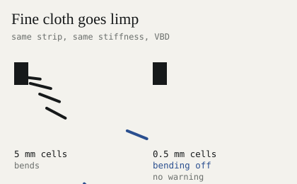

What the fuck is the sim-to-real gap?
Over the past month we found 20 bugs in open-source physics engines. Most never raise an error. They quietly corrupt what your robot learns in simulation, and show up later as the sim-to-real gap: a robot that works in sim and fails on the real thing.
We found them by pushing Newton, MuJoCo Warp and MuJoCo to the scale robot hands work at: tenths of a millimetre, thin cables, fine cloth, blocks resting on boards. We reported all 20 upstream with 11 fixes. Three are merged so far.
Read this if you build in sim. Comparing policies? See failure 1. Simulating thin, light or tight things? See failure 2 and cables and cloth. Loading MJCF files into Newton? See the importer. Short on time? Skip to the checklist.
Four words. A contact has a normal, the direction two shapes push apart, and a depth, how far they overlap. A world is one copy of the scene, and GPU engines run thousands at once. float32 keeps about 7 digits, float64 about 16. NaN is what a broken calculation returns, and it spreads.
Failure 1: the same world, different answers#
GPU engines add contact forces with atomic adds: thousands of threads add into one total, in whatever order they finish. In floating point, a different order gives a different answer.1

In a stack or a grasp, that last digit decides which way a cube tips, and the difference grows.

One ten-cube tower under MuJoCo Warp’s CG solver: 0 of 16 copies fall, then 92 of 256, 882 of 1,024 and 4,031 of 4,096. We have not yet pinned the cause.
- Only 42 % of the GPU configurations we reran repeated bit for bit.
- One VBD tower, run seven times on one GPU, drifted anywhere from 0.44 mm to 6.7 m in 10 s. On the CPU it drifts 0.00013 mm, every time.
- One policy, graded three times on 200 episodes, changing only how its inputs were rounded, placed the plate in 49.6 % to 62.7 % of episodes. From one pair of runs, a sim A/B difference under about 15 points is noise.
The fix and its price. MuJoCo Warp’s deterministic mode costs 40–146 times the step time. The open #1422 costs about 44 times. Our version sorts contacts and adds the big sums as 64-bit integers, which add exactly in any order. Our two-arm scene now repeats bit for bit across 1,024 worlds at 1.10–1.26 times the step time.
Failure 2: a resting block shot through the floor#
In a GPU rollout of a two-arm task, a 15 mm block resting on a 12.7 mm board was fired straight down through the board at several metres per second.

MuJoCo Warp’s general convex path returned the contact upside down and 27.7 mm deep: the two thicknesses added together. MuJoCo C and MuJoCo Warp’s own box-box routine both say 0.009 mm, pointing up.
Why. EPA3 measures an overlap by growing a shape of faces around the origin. The block was barely touching, so EPA’s new faces sat 0.05–0.2 µm from the origin of a shape 0.7 m across. In float32 they fell outside its accepted range and were thrown away. The only face left pointed down.

A 2-D sketch. A related degeneracy, a face built on two near-identical corners, made a cylinder 16.5 µm into a box come back 190 mm deep. Our fix: #1796.
Why tests miss it. Only a sliver of heights flips:

130 of 2,001 heights, scanned in 2 nm steps. Unit tests never land there. Rollouts visit millions of poses, and they do.
We reported it as #1883. Two open PRs from other contributors, #1845 and #1866, fix it together. We checked on the scan and on 8,000 random poses:
| Applied on main | Flipped heights | Reversed normals | Missed contacts |
|---|---|---|---|
| nothing | 130 of 2,001 | 5 | 9 |
| #1845 | 0 | 0 | 5 |
| #1866 | 130 of 2,001 | 8 | 4 |
| #1845 + #1866 | 0 | 0 | 0 |
| box-box routine | 0 | 0 | 0 |
Eighteen more#
Contacts in the wrong place#
Round shapes touched 0.1 mm early (Newton). Spheres and capsules went to GJK2 as a core inflated by 0.1 mm. Then the whole radius was added back, so the 0.1 mm counted twice: 12 % of a 0.85 mm cable’s radius. Fixed and merged: newton#4791.

A box lying across an edge gets one contact (MuJoCo). A thin box crossing a slab’s edge, 0.9–3.6 mm deep along 70 mm, got a single contact at one end. The rest of the line was dropped. mujoco#3755.
Settings the importer drops#
Newton’s MJCF importer loses or changes four settings without a warning.

A one-value solref came in with damping 0 instead of 1, an undamped spring: reference accelerations of 9.5×10¹¹ instead of 65.79. Explicit contact pairs picked up another pair’s friction after MuJoCo’s compiler reordered them.
Cables, cloth and fluids#
Stiff cables sagged 40 % too far (Newton VBD4). VBD solves one body at a time, so a correction moves about one segment per sweep. newton#4795 solves each rod at once, and beams land within 1–2 % of their exact shape.

Fine cloth lost its bending (Newton VBD). Triangles with edges under about 1 mm failed a fixed-size degeneracy test, so bending switched off. In 0.5 mm cells, a strip came out bit for bit the same at bending stiffnesses 10,000 times apart. Fix: newton#5131.

Bending depended on mesh size (Newton semi-implicit and XPBD). At 1 cm cells it was 10⁴ times weaker than at 1 m. newton#5140.
A cloth pile sank through the floor (Newton VBD, self-contact on). 271 of 1,681 particles ended below the ground, the lowest 74 mm down. newton#5143.
Pushed cloth gained 3.2 times the momentum it was given (Newton VBD). newton#5129.
Hanging cloth fell in deterministic mode (Newton VBD). Attachment forces were overwritten when contacts were passed in. Fixed and merged: newton#5146.
A fluid film flowed 15 % too slow (Newton MPM). On the default sparse grid it reached 0.82 of the exact speed, against 0.97 on the dense grid. newton#5206.
Rounding#
A light cable became NaN on step 2 (MuJoCo Warp). The solver factors H = M + JᵀDJ, which needs every eigenvalue above zero. On light bodies with stiff contacts, float32 rounding is bigger than the smallest one. #1801 builds H in float64 as an option, for 25 % more step time.

Slow joints froze (Newton with MuJoCo or MuJoCo Warp). Joint positions are stored in float32. A joint that moves less than half a float32 gap per step never moves, yet keeps its velocity, and contacts feel that phantom speed. newton#5177.

A Franka gripper’s tool walked 1.4 mm out of the grasp in 2 s at a 32.6 µs step.
Empty worlds read leftover memory (MuJoCo Warp). A world with no constraints could return NaN. Fix: #1802.
Worlds that leak into each other#
Every world shared one bounding box (MuJoCo Warp). With object sizes set per world but bounding boxes not, all worlds wrote to one slot, and a ball fell through its own table. #1795; another contributor’s #1800 fixes it.

One world moved another (Newton MPM). With separate_worlds=True, changing the other worlds moved world 0 by up to 0.1 mm. newton#5207.
Where the compute goes#

- Piles run slower on the GPU. A 256-body pile takes MuJoCo Warp 764 ms per step, and MuJoCo on a CPU 365 ms.
- Anti-slip is the biggest single cost: 20–84 % of a CPU step.
- Overflow is silent. At 4,096 worlds, Newton’s mesh contact buffer filled up unnoticed, and pegs sank 28.9 mm into a 20 mm hole.
If you build in sim, check this#
- Run everything twice and compare final states bit for bit. Replicate every A/B test.
- Vary the world count. One world’s answer must not change when 4,095 others run beside it.
- Scan awkward poses against float64: thin shapes, shallow overlaps, near-parallel faces.
- Read back what you imported and compare it with MuJoCo’s own compile of the same file.
- Test at your real scale: your mesh size, your slowest joint, your lightest body.
- Size contact buffers yourself and check them for overflow every step.
- In MuJoCo Warp, route box pairs to the box-box routine (turn
NATIVECCDoff) until #1845 and #1866 land.
The ledger#
| Engine | Bug | Report | Fix | Status |
|---|---|---|---|---|
| Newton | Round shapes 0.1 mm early | #4790 | #4791 | Merged 27 Oct |
| Newton | Hanging cloth falls, deterministic mode | #5145 | #5146 | Merged 5 Nov |
| Newton | MJCF noslip options dropped | #5136 | #5137 | Merged 6 Nov |
| Newton | Stiff rods sag | #4794 | #4795 | Open |
| Newton | One-value solref: damping 0 | #5127 | #5128 | Open |
| Newton | Pair properties on the wrong pair | #5120 | #5121 | Open |
| Newton | MJCF adhesion dropped | #5189 | #5190 | Open |
| Newton | Bending off below ~1 mm | #5130 | #5131 | Open |
| Newton | Bending scales with mesh size | #5140 | Open | |
| Newton | Cloth pile sinks through floor | #5143 | Open | |
| Newton | Cloth gains 3.2× the impulse | #5129 | Open | |
| Newton | Slow joints freeze | #5177 | Open | |
| Newton | MPM film 15 % slow | #5206 | Open | |
| Newton | MPM worlds affect each other | #5207 | Open | |
| MuJoCo Warp | Shared bounding box | #1795 | #1800* | Open |
| MuJoCo Warp | EPA sliver faces | #1796 | Open | |
| MuJoCo Warp | Light cable NaN | #1801 | Open | |
| MuJoCo Warp | Empty worlds read old memory | #1802 | Open | |
| MuJoCo Warp | Resting box contact flipped | #1883 | #1845 + #1866* | Open |
| MuJoCo | Box across an edge, one contact | #3755 | Open |
* by other contributors. Every report links a script that reproduces it. Tested on Newton 1.8.0.dev0, MuJoCo Warp 3.16.0 and main, and Warp 1.18, on one NVIDIA L4.
What’s next#
These bugs share one cause. The engines are tuned for scenes where a millimetre doesn’t matter, nobody reruns a world, and speed is measured on falling boxes. That is the right tuning for most of their users and the wrong one for robot hands. So we are building Alloy, a physics engine for robot hands, around the checks above. It launches soon. Why we are building it, in plain words: Robots need their own wind tunnel.
References#
-
David Goldberg. “What Every Computer Scientist Should Know About Floating-Point Arithmetic.” ACM Computing Surveys 23(1), 1991, pp. 5–48. ↩
-
Elmer G. Gilbert, Daniel W. Johnson, S. Sathiya Keerthi. “A Fast Procedure for Computing the Distance Between Complex Objects in Three-Dimensional Space.” IEEE Journal on Robotics and Automation 4(2), 1988, pp. 193–203. ↩
-
Gino van den Bergen. “Proximity Queries and Penetration Depth Computation on 3D Game Objects.” Game Developers Conference, 2001. ↩
-
Anka He Chen, Ziheng Liu, Yin Yang, Cem Yuksel. “Vertex Block Descent.” ACM Transactions on Graphics (SIGGRAPH), 2024. arXiv:2403.06321. ↩
Citation#
Please cite this work as:
@article{gupta2026simtoreal,
author = {Pranay Gupta},
title = {{What the fuck is the sim-to-real gap?}},
journal = {codnay.github.io},
year = {2026},
month = {November},
url = {https://codnay.github.io/blog/sim-to-real-gap/},
}